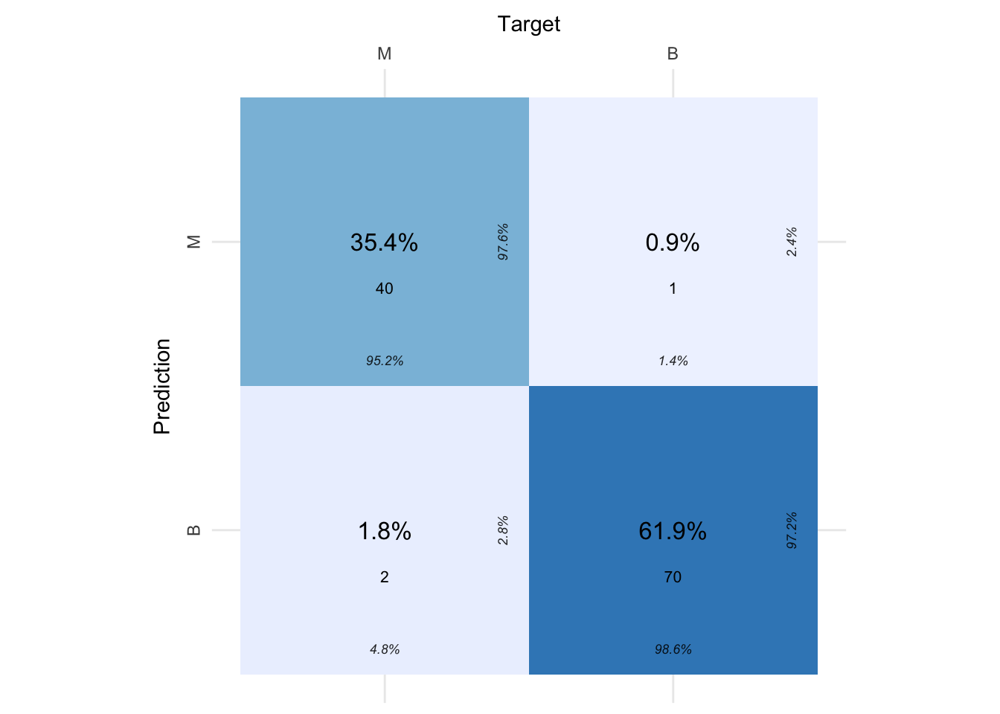
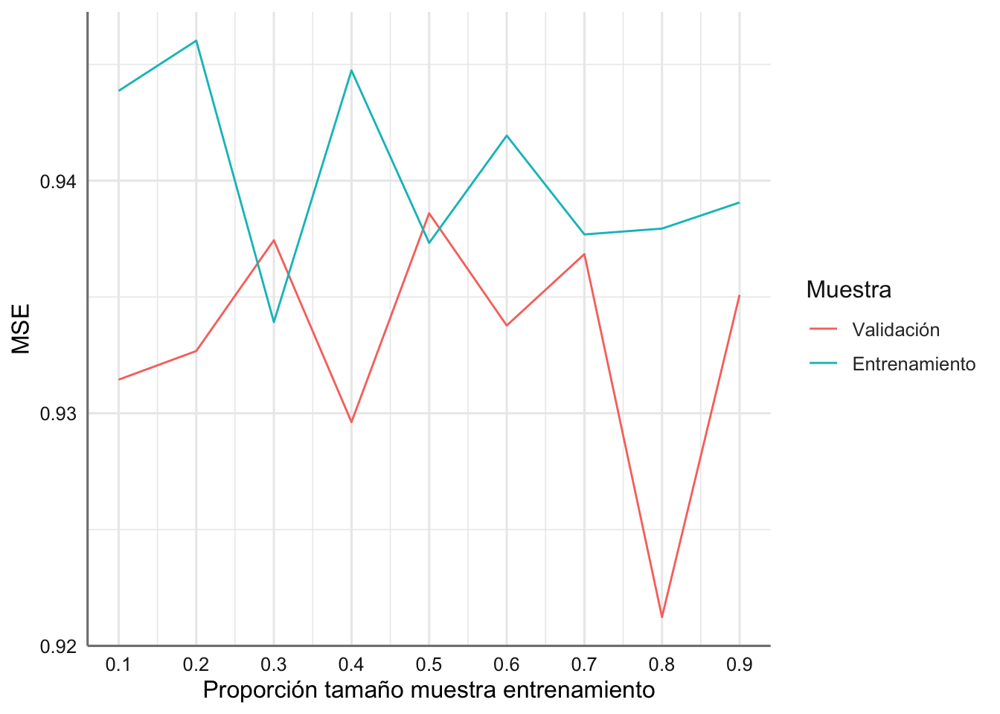
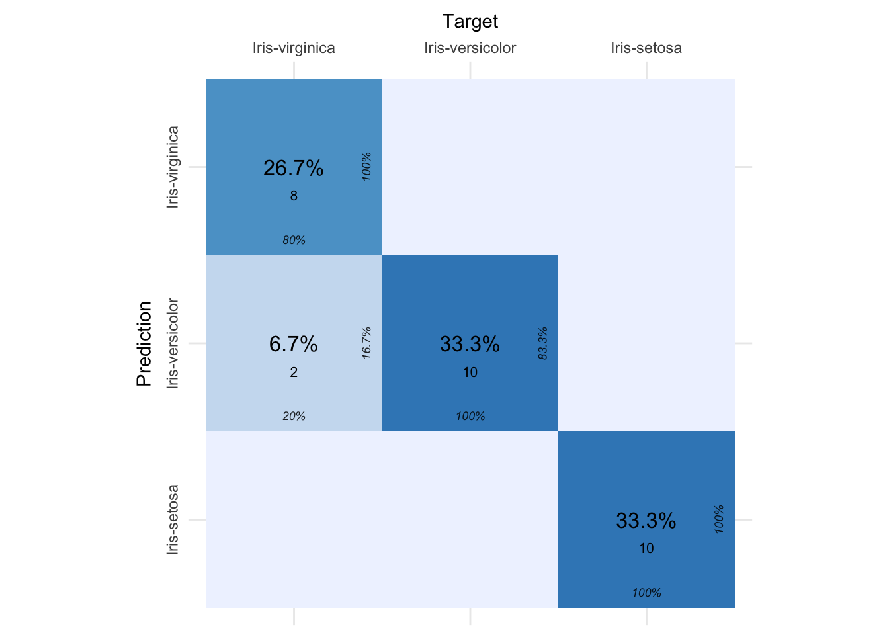
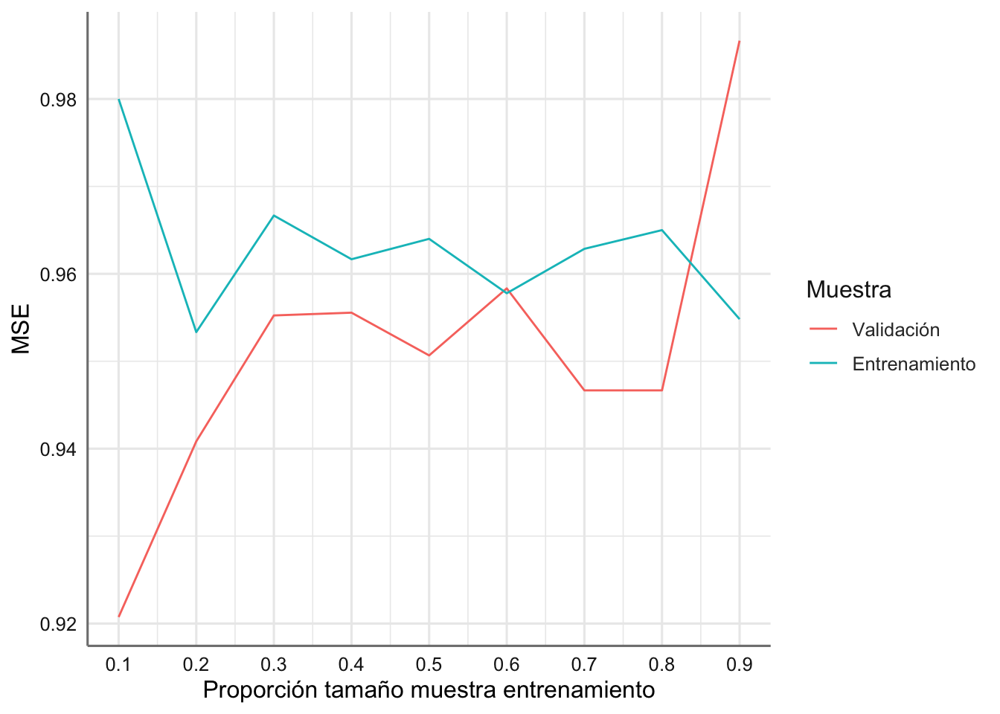

# Paquetes anteriores
library(tidyverse)
library(sjPlot)
library(knitr) # para formatos de tablas
library(skimr)
library(DataExplorer)
library(GGally)
library(gridExtra)
library(ggpubr)
library(cvms)
theme_set(theme_sjplot2())
# Paquetes AA
library(mlr3verse)
library(mlr3tuning)
library(mlr3tuningspaces)9 Modelos de clasificación Naïve Bayes
Con este tema nos introducimos en el bloque específico de algoritmos de aprendizaje automático centrados en los problemas de clasificación. En un problema de clasificación tenemos disponible la información de \(n\) muestras mediante:
Una variable respuesta \(y\) de tipo categórico con \(k\) categorías o etiquetas (que es el nombre que reciben habitualmente dentro del aprendizaje automático) \(y_1,...,y_k\),
Un conjunto de variables predictoras \(X=(X_1,...,X_p)\) que pueden influir de forma distinta en cada una de las etiquetas de la respuesta.
La estructura es muy similar a la de los problemas de regresión logística pero en este caso no disponemos de un modelo sino que tratamos de predecir directamente la probabilidad de cada etiqueta de la respuesta para una nueva muestra dada en función de las variables predictoras registradas.
Los clasificadores Naïve Bayes son los primeros algoritmos de clasificación que vamos a estudiar, dado que se utilizan en muchas ocasiones como modelo de base o partida en los problemas de clasificación, ya que son extremadamente rápidos y sencillos y suelen ser adecuados para conjuntos de datos de muy alta dimensión.
Los clasificadores Bayes se basan en el teorema de Bayes, que es una ecuación que describe la relación de las probabilidades condicionales entre dos conjuntos de sucesos. En nuestro caso estamos interesados en determinar la probabilidad de una clase, del conjunto posible, en función del conjunto de predictoras observadas \[P(y_l|x_1,...,x_p)\] para \(l=1,...,k\), donde \(x_1,...,x_p\) son los valores observados de las predictoras para una muestra dada. Dicha probabilidad se puede escribir utilizando dicho teorema como:
\[P(y_l|x_1,...,x_p) = \frac{P(x_1,...,x_p|y_l)P(y_l)}{P(x_1,...,x_p)}\]
donde \(P(x_1,...,x_p|y_l)\) es la verosimilitud para una etiqueta dada, \(P(y_l)\) es la probabilidad previa de cada clase antes de la toma de datos, \(P(x_1,...,x_p)\) es la información marginal aportada por los datos, y \(P(y_l|x_1,...,x_p)\) es la distribución posterior de la clase \(l\) dada la información recogida. La distribución posterior cuantifica la probabilidad de cada clase dado el conjunto de datos observado. Para evaluar dicho cociente los algoritmos Naïve Bayes asumen independencia entre las observaciones de forma que:
\[P(x_1,x_2,...,x_p| y) = P(x_1|y)P(x_2|y)...P(x_p|y)=\prod_{i=1}^p P(x_i|y)\]
Para la estimación de \(P(y)\) utilizamos la proporción de cada clase en la muestra de entrenamiento.
De esta forma, la regla de clasificación para determinar la clase \(l\) a la que debemos asignar una muestra se obtiene evaluando la expresión:
\[\underset{l}{max}\left[ P(y_l)\prod_{i=1}^p P(x_i|y_l)\right], \quad l=1,...,k\] Por su sencillez, el algoritmo Naïve Bayes tiene muchas aplicaciones en diversos sectores, como la salud, la tecnología, el medio ambiente, etc. Estas son algunas de las más habituales:
La aplicación más habitual es en la clasificación de textos. Por ejemplo, las noticias en la web están creciendo rápidamente y cada sitio de noticias tiene su propia disposición y categorización para agruparlas. Para conseguir mejores resultados de clasificación, aplicamos el clasificador Naïve Bayes para determinar el tipo de noticia basándonos en el contenido de las mismas, a partir de la extracción de palabras clave.
Quizás la aplicación más antigua y que tiene que ver con el análisis de textos del punto anterior es el filtrado de spam en el correo electrónico. Los clasificadores de Naïve Bayes funcionan correlacionando el uso de “tokens” (normalmente palabras, o a veces otras cosas) que pueden ir asociados con correos que pueden ser clasificados como spam y los que no son, y luego utilizan el teorema de Bayes para calcular la probabilidad de que un correo electrónico sea o no spam.
Es un algoritmo habitual dentro del ámbito de la salud donde para cada sujeto hay mucha información disponible, ya que el clasificador Naïve Bayes tiene en cuenta la evidencia de todos los atributos considerados para determinar la probabilidad de que el sujeto padezca o no cierta enfermedad, proporcionando una herramienta muy sencilla para la toma de decisiones.
Otro ámbito de aplicación de estos algoritmos es en la predicción del tiempo en situaciones simples. Los algoritmos Naïve Bayes aprovechan la información pasada para predecir la situación climática (soleado, nuboso, lluvioso) en base a la probabilidad posterior de cada una de las situaciones posibles.
Dos aplicaciones más modernas y de gran utilización en el ámbito del aprendizaje automático son el Análisis de Sentimientos y la construcción de Sistemas de Recomendación. El Análisis de Sentimientos se refiere a la identificación de los sentimientos positivos o negativos de un grupo objetivo a partir de la información recogida sobre ellos (opiniones respecto de un tema en particular). En este caso el análisis de reputación de las personas u organismos es un campo de aplicación habitual del Análisis de Sentimientos. Por otro lado, el denominado Filtrado Colaborativo y el algoritmo Naïve Bayes se complementan para los sistemas de recomendación que tratan de ofrecer al usuario de portales de internet una colección de productos o servicios en los que el usuario podría estar interesado. Estos algoritmos se usan por ejemplo en plataformas como Amazon o Netflix.
En el código siguiente se cargan los paquetes y la configuración básica para este tipo de modelos.
9.1 Tipos de clasificadores Naïve Bayes
Dentro de los clasificadores Naïve Bayes encontramos tres tipos principales en función de las características de la variable respuesta y las predictoras. Dichos tipos son: Naïve Bayes Bernouilli, Naïve Bayes Multinomial, y Naïve Bayes Gaussiano.
9.1.1 Naïve Bayes Bernouilli
El algoritmo Naïve Bayes Bernouilli se utiliza cuando tanto la respuesta como las predictoras tienen únicamente dos etiquetas o categorías, es decir, son variables de tipo binario. En esta situación si la variable \(y\) solo puede tomar los valores \(\{0,1\}\), la verosimilitud individual de cada predictora se expresa como:
\[P(x_i|y) = P(y=1)x_i+(1-P(y=1))(1-x_i)\]
con la que podemos obtener de forma muy rápida la regla de clasificación para este algoritmo ya que esta viene dada por elegir la clase 1 si:
\[[P(y=1)^{q+1}] > [P(y=0)^{p-q+1}]\]
donde \(p\) es el número de predictoras disponibles, \(q\) el número de predictoras que toman el valor 1 para la muestra que tratamos de clasificar, y \(P(y=1)\), \(P(y=0)\) se estiman a partir de los valores de la muestra de entrenamiento.
Por lo tanto, este tipo de clasificador requiere que las muestras se representen como vectores de características de tipo binario. Es el algoritmo menos utilizado de los tres debido a sus restricciones de aplicación pero es el que proporciona una solución más rápida en este tipo de situaciones.
9.1.2 Naïve Bayes Multinomial
Se utiliza cuando la variable respuesta tiene dos o más etiquetas posibles, y las variables predictoras son de tipo categórico multinomial, es decir, con múltiples etiquetas en cada una de ellas. Es un algoritmo muy extendido que se ha utilizado en la clasificación de textos como por ejemplo la identificación de correo en Spam versus No Spam. Este algoritmo evalúa la probabilidad de cada etiqueta para una muestra determinada y devuelve la etiqueta con la mayor posibilidad.
En este caso si \(\theta_{y_l}=(\theta_{y_l;1},...,\theta_{y_l;p})\) representa el vector de probabilidades para la clase \(l\) asociada con el conjunto de predictoras, podemos estimar dichos parámetros mediante la expresión:
\[\hat{\theta}_{y_l;j} = \frac{N_{y_l;j} + \alpha}{N_{y_l} + \alpha n},\]
donde \(N_{y_l;j}\) es el número de predictoras de la muestra con valor 1 para la clase l, \(N_{y_l} = \sum_{j=1}^n N_{y_l;j}\), y \(\alpha\) es el parámetro de suavizado que tiene en cuenta las clases que no están presentes en las muestras de aprendizaje y evitan las probabilidades nulas en los cálculos posteriores. El ajuste se denomina suavizado de Laplace cuando \(\alpha=1\), mientras que se denomina suavizado de Lidstone cuando \(\alpha < 1\).
9.1.3 Naïve Bayes Gaussiano
Es una variante del Naïve Bayes Multinomial donde las variables predictoras son todas de tipo numérico. Todas ellas se distribuyen mediante una distribución Normal Multivariante. Este algoritmo hace uso de las medias y desviaciones estándar de las predictoras para obtener la probabilidad de clasificación de cada etiqueta de la respuesta. En este caso las verosimilitudes necesarias para la regla de clasificación se obtienen a partir de la función de densidad de la distribución normal como:
\[P(x_i|y) = \frac{1}{\sqrt{2\pi\sigma_y^2}}exp\left(-\frac{(x_i-\mu_y)^2}{2\sigma_y^2}\right),\]
donde los parámetros \(\mu_y\) y \(\sigma_y^2\) se estiman por máxima verosimilitud a partir de la información contenida en la muestra de entrenamiento, es decir, las medias y varianzas muestrales de cada predictora cuando estamos en la clase \(l\).
9.2 Ventajas e inconvenientes de los clasificadores Naïve Bayes
Los clasificadores Naïve Bayes tienden a funcionar especialmente bien en cualquiera de las siguientes situaciones:
- Cuando las clases de la respuesta están bien separadas, es decir, la distribución de probabilidad posterior de las clases en función de las predictoras son diferentes.
- Cuando disponemos de una gran cantidad de predictoras y la complejidad del modelo no es relevante.
Estos dos puntos están relacionados ya que a medida que aumenta la dimensión de un conjunto de datos, es mucho menos probable que se descubran dos puntos cercanos entre sí. Esto significa que las agrupaciones en dimensiones altas tienden a estar más separadas que las agrupaciones en dimensiones bajas.
El clasificador Naïve Bayes tiene además las siguientes ventajas computacionales:
- Es extremadamente rápido tanto para el entrenamiento como para la predicción, y por tanto tiene un coste de cálculo muy bajo.
- Proporciona una predicción probabilística directa.
- Puede trabajar eficazmente en un gran conjunto de datos.
- Cuando se cumple el supuesto de independencia (algo que en la práctica es bastante difícil), un clasificador Naïve Bayes funciona mejor en comparación con otros modelos como la regresión logística.
Entre las desventajas de este algoritmo podemos mencionar:
La hipótesis de la independencia condicional no siempre se cumple. En la mayoría de las situaciones, las variables predictoras muestran alguna forma de dependencia.
El problema de la probabilidad cero hace referencia a las situaciones en las que en la muestra de test tenemos valores de la respuesta que no estaban en la muestra de entrenamiento. Esto provoca automáticamente que la probabilidad de esa clase sea siempre cero. Por ese motivo hay que tener cuidado y analizar con detalle la muestra de entrenamiento para asegurar de que se dispone de valores de todas las clases de la respuesta.
9.3 Bancos de datos
Para mostrar el funcionamiento de los algoritmos de clasificación naïve Bayes utilizamos los mismos ejemplos del tema anterior, para poder comparar los resultados entre ambos algoritmos. Como ya hemos visto y trabajado con ambos bancos de datos, en este punto solo cargamos las tareas correspondientes.
9.3.1 Breast Cancer Wisconsin
En esta base de datos se recoge información sobre los cánceres de mama en la ciudad de Wisconsin. Las características de la base de datos se calculan a partir de una imagen digitalizada de un aspiración de aguja fina (FNA) de una masa mamaria. Describen las características de los núcleos celulares presentes en la imagen y el objetivo que se persigue es clasificar un tumor como benigno o maligno en función de las variables predictoras. Como en este caso estamos interesados en saber que predictoras influyen más en el carácter maligno del cáncer, utilizaremos esa categoría como la de interés.
9.3.2 Iris
El banco de datos iris ya los presentamos en temas anteriores y aquí solo se presenta el código para crear la tarea de clasificación correspondiente.
9.4 Clasificador naïve Bayes en mlr3
Para realizar el proceso de aprendizaje de un modelo de clasificación de clasificación naïve Bayes debemos usar el learner classif.naive_bayes que permite obtener de forma automática el clasificador correspondiente a cada situación. Podemos cargar el clasificador con el código siguiente:
Los hiperparámetros de este algoritmo son:
[1] "eps" "laplace" "threshold"y se interpretan como:
eps: es un número para especificar un rango épsilon para aplicar el suavizado de Laplace, es decir, para reemplazar probabilidades cero o cercanas a cero portheshold.laplace: Suavizado de Laplace de doble control que se específica con un valor positivo. El valor predeterminado (0) desactiva el suavizado de Laplace.threshold: valor con el que se reemplazan probabilidades dentro del rango dado poreps.
En primer lugar obtenemos el clasificador naïve Bayes por defecto para cada banco de datos, lo que nos permitirá tener un modelo de base para comparación. El análisis de estos modelos es similar al de los problemas de clasificación de la regresión logística en cuanto a términos de evaluación y validación de la solución obtenida. A continuación mostramos los resultados obtenidos para las muestras de validación en los modelos de regresión lógistica para poder comparar los resultados.
| Datos | Modelo | % Clasificación correcta | Score de Brier |
|---|---|---|---|
| Cáncer | classif.log_reg |
97.34 | 0.0265 |
| Cáncer | classif.glmnet |
96.70 | |
| Iris | classif.multinom |
96.66 | 0.0667 |
| Iris | classif.glmnet |
85.50 |
9.4.1 Datos Breast Cancer
Comenzamos nuestro análisis con el banco de datos breast cancer. Para ello debemos definir el grpahlearner asociado (prerprocesamiento y modelo):
Para poder entrenar el modelo consideramos la división de muestras (80-20) y estratificamos según la variable diagnosis dado que los niveles no están equilibrados (ver tema de regresión logística).
# Generamos variable de estrato
tsk_cancer$col_roles$stratum <- "diagnosis"
# Fijamos semilla para asegurar la reproducibilidad del modelo
set.seed(135)
# Creamos la partición
splits = mlr3::partition(tsk_cancer, ratio = 0.8)
# Muestras de entrenamiento y validación
tsk_train_cancer = tsk_cancer$clone()$filter(splits$train)
tsk_test_cancer = tsk_cancer$clone()$filter(splits$test)Podemos comenzar ahora con el entrenamiento del modelo y su interpretación:
El entrenamiento de este modelo proporciona dos resultados:
apriori: probabilidades a priori de cada una de los niveles del factor utilizados en el proceso de clasificación.tables: Una lista de tablas, una para cada variable predictiva. Para cada variable categórica, una tabla que proporciona, para cada nivel de atributo, las probabilidades condicionales dada la clase objetivo. Para cada variable numérica, una tabla que proporciona, para cada clase objetivo, la media y la desviación estándar de la (sub)variable.
Veamos el resultado para este modelo donde todas las predictoras son de tipo numérico:
$area_mean
area_mean
y [,1] [,2]
M 0.9136272 1.0262682
B -0.5430651 0.4220094
$area_se
area_se
y [,1] [,2]
M 0.7251339 1.330193
B -0.4310236 0.217210
$area_worst
area_worst
y [,1] [,2]
M 0.9436145 1.0483184
B -0.5608897 0.3130474
$compactness_mean
compactness_mean
y [,1] [,2]
M 0.7633525 1.0244019
B -0.4537410 0.6480995
$compactness_se
compactness_se
y [,1] [,2]
M 0.3551035 1.0293835
B -0.2110755 0.9209903
$compactness_worst
compactness_worst
y [,1] [,2]
M 0.7544960 1.0866349
B -0.4484766 0.5957466
$concave_points_mean
concave_points_mean
y [,1] [,2]
M 1.0005673 0.8713090
B -0.5947428 0.4406619
$concave_points_se
concave_points_se
y [,1] [,2]
M 0.4888882 0.8801630
B -0.2905979 0.9538363
$concave_points_worst
concave_points_worst
y [,1] [,2]
M 1.0196676 0.6939235
B -0.6060962 0.5675614
$concavity_mean
concavity_mean
y [,1] [,2]
M 0.8824299 0.9271187
B -0.5245213 0.5884118
$concavity_se
concavity_se
y [,1] [,2]
M 0.2891704 0.6909921
B -0.1718845 1.1107806
$concavity_worst
concavity_worst
y [,1] [,2]
M 0.8293056 0.8670979
B -0.4929439 0.7046776
$fractal_dimension_mean
fractal_dimension_mean
y [,1] [,2]
M 0.007241941 1.054936
B -0.004304650 0.967738
$fractal_dimension_se
fractal_dimension_se
y [,1] [,2]
M 0.09314092 0.7653912
B -0.05536349 1.1139378
$fractal_dimension_worst
fractal_dimension_worst
y [,1] [,2]
M 0.4250828 1.1807233
B -0.2526716 0.7732786
$perimeter_mean
perimeter_mean
y [,1] [,2]
M 0.9503260 0.8836812
B -0.5648791 0.5239512
$perimeter_se
perimeter_se
y [,1] [,2]
M 0.7203788 1.2528486
B -0.4281972 0.4149526
$perimeter_worst
perimeter_worst
y [,1] [,2]
M 1.0014746 0.8772335
B -0.5952821 0.4316392
$radius_mean
radius_mean
y [,1] [,2]
M 0.9325751 0.8930061
B -0.5543278 0.5445070
$radius_se
radius_se
y [,1] [,2]
M 0.7345592 1.2239759
B -0.4366261 0.4415538
$radius_worst
radius_worst
y [,1] [,2]
M 0.9956696 0.8820899
B -0.5918316 0.4384883
$smoothness_mean
smoothness_mean
y [,1] [,2]
M 0.4580643 0.8947329
B -0.2722760 0.9603276
$smoothness_se
smoothness_se
y [,1] [,2]
M -0.10941078 0.9633435
B 0.06503438 1.0172515
$smoothness_worst
smoothness_worst
y [,1] [,2]
M 0.5416746 0.9584092
B -0.3219744 0.8790675
$symmetry_mean
symmetry_mean
y [,1] [,2]
M 0.4395975 0.9661733
B -0.2612992 0.9269095
$symmetry_se
symmetry_se
y [,1] [,2]
M 0.004624306 1.2092047
B -0.002748713 0.8540645
$symmetry_worst
symmetry_worst
y [,1] [,2]
M 0.5812294 1.1792987
B -0.3454860 0.6712026
$texture_mean
texture_mean
y [,1] [,2]
M 0.5351311 0.8394401
B -0.3180849 0.9519942
$texture_se
texture_se
y [,1] [,2]
M -0.01687734 0.878520
B 0.01003198 1.067032
$texture_worst
texture_worst
y [,1] [,2]
M 0.6031754 0.8540254
B -0.3585308 0.9044240Para cada variable se presenta en la primera columna las medias y en la segunda las desviaciones estándar. Podemos ver los resultados para area_mean:
Podemos ver como los valores más altos de area_men están vinculados con los tumores clasificados como malignos, mientras que los valores más bajos están vinculados a los tumores benignos. Estudiamos ahora la clasificación proporcionada por el algoritmo. En primer lugar calculamos las predicciones tanto para la muestra de entrenamiento como la de validación.
# Predicción de la muestra de entrenamiento y validación
pred_train = gr$predict(tsk_train_cancer)
pred_test = gr$predict(tsk_test_cancer)
# Visualizamos las primeras predicciones de la muestra de validación
pred_test<PredictionClassif> for 113 observations:
row_ids truth response prob.M prob.B
12 M M 1.000000e+00 2.388608e-21
21 B B 4.558006e-12 1.000000e+00
26 M M 1.000000e+00 7.027807e-84
---
550 B B 2.575166e-14 1.000000e+00
565 M M 1.000000e+00 2.574139e-138
567 M M 1.000000e+00 1.758746e-10Consideramos ahora diferentes métricas de evaluación y obtenemos sus valores para las muestras de predicción:
# scores de validación
measures = msrs(c("classif.acc", "classif.bacc", "classif.bbrier", "classif.auc"))
# Muestra de entrenamiento
pred_train$score(measures) classif.acc classif.bacc classif.bbrier classif.auc
0.93201754 0.92194570 0.06090643 0.98679556 classif.acc classif.bacc classif.bbrier classif.auc
0.9734513 0.9691482 0.0255175 0.9979879 El porcentaje de clasificación correcta para la muestra de validación es del 97.34%, que es igual al mejor que obteníamos para el modelo de regresión logística. Tanto el score de brier como el AUC proporcionan valores que indican que el algoritmo utilizado proporciona una buena clasificación. Podemos ver la tabla de confusión para ver donde se concentran los errores de clasificación cometidos.
En este caso tenemos dos muestras que originalmente correspondían a un tumor maligno pero que el modelo clasifica como benigno. Por contra, hay 1 que originalmente era benigno y que el modelo clasifica como maligno. Representamos gráficamente la matriz de confusión.
# Cargamos la librería para representar la matriz de confusión
cm = confusion_matrix(pred_test$truth, pred_test$response)
plot_confusion_matrix(cm$`Confusion Matrix`[[1]]) 
Procedemos ahora con el estudio de validación de la solución mediante un análisis de validación cruzada con 10 folds.
# Fijamos semilla
set.seed(135)
# Definimos proceso de validación cruzada kfold con k=10
resamp = rsmp("cv", folds = 10)
# Remuestreo
rr = resample(tsk_cancer, gr, resamp, store_models=TRUE)INFO [17:40:45.324] [mlr3] Applying learner 'scale.classif.naive_bayes' on task 'breastcancer[, -1]' (iter 1/10)
INFO [17:40:45.547] [mlr3] Applying learner 'scale.classif.naive_bayes' on task 'breastcancer[, -1]' (iter 2/10)
INFO [17:40:45.772] [mlr3] Applying learner 'scale.classif.naive_bayes' on task 'breastcancer[, -1]' (iter 3/10)
INFO [17:40:46.473] [mlr3] Applying learner 'scale.classif.naive_bayes' on task 'breastcancer[, -1]' (iter 4/10)
INFO [17:40:46.673] [mlr3] Applying learner 'scale.classif.naive_bayes' on task 'breastcancer[, -1]' (iter 5/10)
INFO [17:40:46.834] [mlr3] Applying learner 'scale.classif.naive_bayes' on task 'breastcancer[, -1]' (iter 6/10)
INFO [17:40:46.979] [mlr3] Applying learner 'scale.classif.naive_bayes' on task 'breastcancer[, -1]' (iter 7/10)
INFO [17:40:47.146] [mlr3] Applying learner 'scale.classif.naive_bayes' on task 'breastcancer[, -1]' (iter 8/10)
INFO [17:40:47.293] [mlr3] Applying learner 'scale.classif.naive_bayes' on task 'breastcancer[, -1]' (iter 9/10)
INFO [17:40:47.459] [mlr3] Applying learner 'scale.classif.naive_bayes' on task 'breastcancer[, -1]' (iter 10/10)| Name | scores |
| Number of rows | 10 |
| Number of columns | 1 |
| _______________________ | |
| Column type frequency: | |
| numeric | 1 |
| ________________________ | |
| Group variables | None |
Variable type: numeric
| skim_variable | n_missing | complete_rate | mean | sd | p0 | p25 | p50 | p75 | p100 | hist |
|---|---|---|---|---|---|---|---|---|---|---|
| data | 0 | 1 | 0.93 | 0.04 | 0.88 | 0.89 | 0.95 | 0.96 | 0.97 | ▅▁▂▂▇ |
Podemos ver como el promedio del porcentaje de clasificación correcta se sitúa en el 92.95% con una desviación del 3%, lo que indica que tenemos bastante precisión en la solución obtenida. Sin embargo, como la diferencia entre la mediana y la media es de casi un 2% la distribución de los resultados es algo asimétrica lo que puede indicar cierta dependencia de los resultados con respecto a la muestra de entrenamiento utilizada. Analizamos la curva de aprendizaje asociada cargando en primer lugar las funciones correspondientes.
INFO [17:40:48.062] [mlr3] Applying learner 'scale.classif.naive_bayes' on task 'breastcancer[, -1]' (iter 1/10)
INFO [17:40:48.601] [mlr3] Applying learner 'scale.classif.naive_bayes' on task 'breastcancer[, -1]' (iter 2/10)
INFO [17:40:49.106] [mlr3] Applying learner 'scale.classif.naive_bayes' on task 'breastcancer[, -1]' (iter 3/10)
INFO [17:40:49.579] [mlr3] Applying learner 'scale.classif.naive_bayes' on task 'breastcancer[, -1]' (iter 4/10)
INFO [17:40:50.106] [mlr3] Applying learner 'scale.classif.naive_bayes' on task 'breastcancer[, -1]' (iter 5/10)
INFO [17:40:50.610] [mlr3] Applying learner 'scale.classif.naive_bayes' on task 'breastcancer[, -1]' (iter 6/10)
INFO [17:40:51.109] [mlr3] Applying learner 'scale.classif.naive_bayes' on task 'breastcancer[, -1]' (iter 7/10)
INFO [17:40:51.586] [mlr3] Applying learner 'scale.classif.naive_bayes' on task 'breastcancer[, -1]' (iter 8/10)
INFO [17:40:52.050] [mlr3] Applying learner 'scale.classif.naive_bayes' on task 'breastcancer[, -1]' (iter 9/10)
INFO [17:40:52.486] [mlr3] Applying learner 'scale.classif.naive_bayes' on task 'breastcancer[, -1]' (iter 10/10)
INFO [17:40:53.050] [mlr3] Applying learner 'scale.classif.naive_bayes' on task 'breastcancer[, -1]' (iter 1/10)
INFO [17:40:53.526] [mlr3] Applying learner 'scale.classif.naive_bayes' on task 'breastcancer[, -1]' (iter 2/10)
INFO [17:40:53.997] [mlr3] Applying learner 'scale.classif.naive_bayes' on task 'breastcancer[, -1]' (iter 3/10)
INFO [17:40:54.438] [mlr3] Applying learner 'scale.classif.naive_bayes' on task 'breastcancer[, -1]' (iter 4/10)
INFO [17:40:54.877] [mlr3] Applying learner 'scale.classif.naive_bayes' on task 'breastcancer[, -1]' (iter 5/10)
INFO [17:40:55.324] [mlr3] Applying learner 'scale.classif.naive_bayes' on task 'breastcancer[, -1]' (iter 6/10)
INFO [17:40:55.761] [mlr3] Applying learner 'scale.classif.naive_bayes' on task 'breastcancer[, -1]' (iter 7/10)
INFO [17:40:56.252] [mlr3] Applying learner 'scale.classif.naive_bayes' on task 'breastcancer[, -1]' (iter 8/10)
INFO [17:40:56.695] [mlr3] Applying learner 'scale.classif.naive_bayes' on task 'breastcancer[, -1]' (iter 9/10)
INFO [17:40:57.127] [mlr3] Applying learner 'scale.classif.naive_bayes' on task 'breastcancer[, -1]' (iter 10/10)
INFO [17:40:57.642] [mlr3] Applying learner 'scale.classif.naive_bayes' on task 'breastcancer[, -1]' (iter 1/10)
INFO [17:40:58.082] [mlr3] Applying learner 'scale.classif.naive_bayes' on task 'breastcancer[, -1]' (iter 2/10)
INFO [17:40:58.565] [mlr3] Applying learner 'scale.classif.naive_bayes' on task 'breastcancer[, -1]' (iter 3/10)
INFO [17:40:59.025] [mlr3] Applying learner 'scale.classif.naive_bayes' on task 'breastcancer[, -1]' (iter 4/10)
INFO [17:40:59.485] [mlr3] Applying learner 'scale.classif.naive_bayes' on task 'breastcancer[, -1]' (iter 5/10)
INFO [17:40:59.916] [mlr3] Applying learner 'scale.classif.naive_bayes' on task 'breastcancer[, -1]' (iter 6/10)
INFO [17:41:00.366] [mlr3] Applying learner 'scale.classif.naive_bayes' on task 'breastcancer[, -1]' (iter 7/10)
INFO [17:41:00.801] [mlr3] Applying learner 'scale.classif.naive_bayes' on task 'breastcancer[, -1]' (iter 8/10)
INFO [17:41:01.236] [mlr3] Applying learner 'scale.classif.naive_bayes' on task 'breastcancer[, -1]' (iter 9/10)
INFO [17:41:01.678] [mlr3] Applying learner 'scale.classif.naive_bayes' on task 'breastcancer[, -1]' (iter 10/10)
INFO [17:41:02.216] [mlr3] Applying learner 'scale.classif.naive_bayes' on task 'breastcancer[, -1]' (iter 1/10)
INFO [17:41:02.666] [mlr3] Applying learner 'scale.classif.naive_bayes' on task 'breastcancer[, -1]' (iter 2/10)
INFO [17:41:03.132] [mlr3] Applying learner 'scale.classif.naive_bayes' on task 'breastcancer[, -1]' (iter 3/10)
INFO [17:41:03.574] [mlr3] Applying learner 'scale.classif.naive_bayes' on task 'breastcancer[, -1]' (iter 4/10)
INFO [17:41:04.007] [mlr3] Applying learner 'scale.classif.naive_bayes' on task 'breastcancer[, -1]' (iter 5/10)
INFO [17:41:04.459] [mlr3] Applying learner 'scale.classif.naive_bayes' on task 'breastcancer[, -1]' (iter 6/10)
INFO [17:41:04.909] [mlr3] Applying learner 'scale.classif.naive_bayes' on task 'breastcancer[, -1]' (iter 7/10)
INFO [17:41:05.353] [mlr3] Applying learner 'scale.classif.naive_bayes' on task 'breastcancer[, -1]' (iter 8/10)
INFO [17:41:05.792] [mlr3] Applying learner 'scale.classif.naive_bayes' on task 'breastcancer[, -1]' (iter 9/10)
INFO [17:41:06.238] [mlr3] Applying learner 'scale.classif.naive_bayes' on task 'breastcancer[, -1]' (iter 10/10)
INFO [17:41:06.782] [mlr3] Applying learner 'scale.classif.naive_bayes' on task 'breastcancer[, -1]' (iter 1/10)
INFO [17:41:07.223] [mlr3] Applying learner 'scale.classif.naive_bayes' on task 'breastcancer[, -1]' (iter 2/10)
INFO [17:41:07.684] [mlr3] Applying learner 'scale.classif.naive_bayes' on task 'breastcancer[, -1]' (iter 3/10)
INFO [17:41:08.127] [mlr3] Applying learner 'scale.classif.naive_bayes' on task 'breastcancer[, -1]' (iter 4/10)
INFO [17:41:08.920] [mlr3] Applying learner 'scale.classif.naive_bayes' on task 'breastcancer[, -1]' (iter 5/10)
INFO [17:41:09.345] [mlr3] Applying learner 'scale.classif.naive_bayes' on task 'breastcancer[, -1]' (iter 6/10)
INFO [17:41:09.773] [mlr3] Applying learner 'scale.classif.naive_bayes' on task 'breastcancer[, -1]' (iter 7/10)
INFO [17:41:10.206] [mlr3] Applying learner 'scale.classif.naive_bayes' on task 'breastcancer[, -1]' (iter 8/10)
INFO [17:41:10.646] [mlr3] Applying learner 'scale.classif.naive_bayes' on task 'breastcancer[, -1]' (iter 9/10)
INFO [17:41:11.065] [mlr3] Applying learner 'scale.classif.naive_bayes' on task 'breastcancer[, -1]' (iter 10/10)
INFO [17:41:11.572] [mlr3] Applying learner 'scale.classif.naive_bayes' on task 'breastcancer[, -1]' (iter 1/10)
INFO [17:41:12.013] [mlr3] Applying learner 'scale.classif.naive_bayes' on task 'breastcancer[, -1]' (iter 2/10)
INFO [17:41:12.449] [mlr3] Applying learner 'scale.classif.naive_bayes' on task 'breastcancer[, -1]' (iter 3/10)
INFO [17:41:12.881] [mlr3] Applying learner 'scale.classif.naive_bayes' on task 'breastcancer[, -1]' (iter 4/10)
INFO [17:41:13.321] [mlr3] Applying learner 'scale.classif.naive_bayes' on task 'breastcancer[, -1]' (iter 5/10)
INFO [17:41:13.760] [mlr3] Applying learner 'scale.classif.naive_bayes' on task 'breastcancer[, -1]' (iter 6/10)
INFO [17:41:14.177] [mlr3] Applying learner 'scale.classif.naive_bayes' on task 'breastcancer[, -1]' (iter 7/10)
INFO [17:41:14.615] [mlr3] Applying learner 'scale.classif.naive_bayes' on task 'breastcancer[, -1]' (iter 8/10)
INFO [17:41:15.046] [mlr3] Applying learner 'scale.classif.naive_bayes' on task 'breastcancer[, -1]' (iter 9/10)
INFO [17:41:15.483] [mlr3] Applying learner 'scale.classif.naive_bayes' on task 'breastcancer[, -1]' (iter 10/10)
INFO [17:41:15.994] [mlr3] Applying learner 'scale.classif.naive_bayes' on task 'breastcancer[, -1]' (iter 1/10)
INFO [17:41:16.435] [mlr3] Applying learner 'scale.classif.naive_bayes' on task 'breastcancer[, -1]' (iter 2/10)
INFO [17:41:16.871] [mlr3] Applying learner 'scale.classif.naive_bayes' on task 'breastcancer[, -1]' (iter 3/10)
INFO [17:41:17.292] [mlr3] Applying learner 'scale.classif.naive_bayes' on task 'breastcancer[, -1]' (iter 4/10)
INFO [17:41:17.735] [mlr3] Applying learner 'scale.classif.naive_bayes' on task 'breastcancer[, -1]' (iter 5/10)
INFO [17:41:18.167] [mlr3] Applying learner 'scale.classif.naive_bayes' on task 'breastcancer[, -1]' (iter 6/10)
INFO [17:41:18.638] [mlr3] Applying learner 'scale.classif.naive_bayes' on task 'breastcancer[, -1]' (iter 7/10)
INFO [17:41:19.069] [mlr3] Applying learner 'scale.classif.naive_bayes' on task 'breastcancer[, -1]' (iter 8/10)
INFO [17:41:19.538] [mlr3] Applying learner 'scale.classif.naive_bayes' on task 'breastcancer[, -1]' (iter 9/10)
INFO [17:41:19.974] [mlr3] Applying learner 'scale.classif.naive_bayes' on task 'breastcancer[, -1]' (iter 10/10)
INFO [17:41:20.481] [mlr3] Applying learner 'scale.classif.naive_bayes' on task 'breastcancer[, -1]' (iter 1/10)
INFO [17:41:20.914] [mlr3] Applying learner 'scale.classif.naive_bayes' on task 'breastcancer[, -1]' (iter 2/10)
INFO [17:41:21.375] [mlr3] Applying learner 'scale.classif.naive_bayes' on task 'breastcancer[, -1]' (iter 3/10)
INFO [17:41:21.809] [mlr3] Applying learner 'scale.classif.naive_bayes' on task 'breastcancer[, -1]' (iter 4/10)
INFO [17:41:22.255] [mlr3] Applying learner 'scale.classif.naive_bayes' on task 'breastcancer[, -1]' (iter 5/10)
INFO [17:41:22.698] [mlr3] Applying learner 'scale.classif.naive_bayes' on task 'breastcancer[, -1]' (iter 6/10)
INFO [17:41:23.121] [mlr3] Applying learner 'scale.classif.naive_bayes' on task 'breastcancer[, -1]' (iter 7/10)
INFO [17:41:23.565] [mlr3] Applying learner 'scale.classif.naive_bayes' on task 'breastcancer[, -1]' (iter 8/10)
INFO [17:41:23.999] [mlr3] Applying learner 'scale.classif.naive_bayes' on task 'breastcancer[, -1]' (iter 9/10)
INFO [17:41:24.443] [mlr3] Applying learner 'scale.classif.naive_bayes' on task 'breastcancer[, -1]' (iter 10/10)
INFO [17:41:24.957] [mlr3] Applying learner 'scale.classif.naive_bayes' on task 'breastcancer[, -1]' (iter 1/10)
INFO [17:41:25.403] [mlr3] Applying learner 'scale.classif.naive_bayes' on task 'breastcancer[, -1]' (iter 2/10)
INFO [17:41:25.845] [mlr3] Applying learner 'scale.classif.naive_bayes' on task 'breastcancer[, -1]' (iter 3/10)
INFO [17:41:26.269] [mlr3] Applying learner 'scale.classif.naive_bayes' on task 'breastcancer[, -1]' (iter 4/10)
INFO [17:41:26.713] [mlr3] Applying learner 'scale.classif.naive_bayes' on task 'breastcancer[, -1]' (iter 5/10)
INFO [17:41:27.146] [mlr3] Applying learner 'scale.classif.naive_bayes' on task 'breastcancer[, -1]' (iter 6/10)
INFO [17:41:27.583] [mlr3] Applying learner 'scale.classif.naive_bayes' on task 'breastcancer[, -1]' (iter 7/10)
INFO [17:41:28.017] [mlr3] Applying learner 'scale.classif.naive_bayes' on task 'breastcancer[, -1]' (iter 8/10)
INFO [17:41:28.459] [mlr3] Applying learner 'scale.classif.naive_bayes' on task 'breastcancer[, -1]' (iter 9/10)
INFO [17:41:28.964] [mlr3] Applying learner 'scale.classif.naive_bayes' on task 'breastcancer[, -1]' (iter 10/10)
Podemos ver cierta irregularidad en ambas curvas indicando que en este caso no aprece existir una tamaño mejor que otro. De hecho, los valores se mueven entre el 92% y el 95% cualquiera que sea el tamaño de la muestra de entrenamiento.
9.4.2 Datos iris
Vemos ahora el análisis para el banco de datos iris que recordemos tiene tres niveles en su variable respuesta. Comenzamos definiendo la estructura del algoritmo de aprendizaje.
Definimos las muestras de entrenamiento y validación
# Generamos variable de estrato
tsk_iris$col_roles$stratum <- "species"
# Fijamos semilla para asegurar la reproducibilidad del modelo
set.seed(135)
# Creamos la partición
splits = mlr3::partition(tsk_iris, ratio = 0.8)
# Muestras de entrenamiento y validación
tsk_train_iris = tsk_iris$clone()$filter(splits$train)
tsk_test_iris = tsk_iris$clone()$filter(splits$test)Ahora podemos comenzar el proceso de aprendizaje asociado con este modelo.
# Entrenamiento
gr$train(tsk_train_iris)
# Tablas
modelo = gr$model$classif.naive_bayes$model
modelo
Naive Bayes Classifier for Discrete Predictors
Call:
naiveBayes.default(x = x, y = y)
A-priori probabilities:
y
Iris-setosa Iris-versicolor Iris-virginica
0.3333333 0.3333333 0.3333333
Conditional probabilities:
petal_length
y [,1] [,2]
Iris-setosa -1.3021518 0.08463312
Iris-versicolor 0.2826886 0.22953367
Iris-virginica 1.0194633 0.32317365
petal_width
y [,1] [,2]
Iris-setosa -1.2515277 0.1432356
Iris-versicolor 0.1572487 0.2527098
Iris-virginica 1.0942790 0.3269682
sepal_length
y [,1] [,2]
Iris-setosa -1.0430969 0.3914919
Iris-versicolor 0.1402483 0.5633032
Iris-virginica 0.9028485 0.7800932
sepal_width
y [,1] [,2]
Iris-setosa 0.76933531 0.8388127
Iris-versicolor -0.68141128 0.7906397
Iris-virginica -0.08792404 0.7945786Estudiamos la capacidad explicativa del modelo propuesto. Calculamos las predicciones:
# Predicción de la muestra de entrenamiento y validación
pred_train = gr$predict(tsk_train_iris)
pred_test = gr$predict(tsk_test_iris)
# Visualizamos las primeras predicciones de la muestra de validación
pred_test<PredictionClassif> for 30 observations:
row_ids truth response prob.Iris-setosa prob.Iris-versicolor
15 Iris-setosa Iris-setosa 1.000000e+00 7.418733e-22
16 Iris-setosa Iris-setosa 1.000000e+00 4.068547e-19
18 Iris-setosa Iris-setosa 1.000000e+00 2.819040e-20
---
147 Iris-virginica Iris-virginica 1.038232e-171 3.935583e-02
148 Iris-virginica Iris-virginica 2.036225e-192 3.474621e-04
150 Iris-virginica Iris-virginica 2.942447e-170 6.339116e-02
prob.Iris-virginica
4.864661e-26
1.792012e-23
1.425085e-25
---
9.606442e-01
9.996525e-01
9.366088e-01Obtenemos la matriz de confusión para la muestra de validación:
truth
response Iris-setosa Iris-versicolor Iris-virginica
Iris-setosa 10 0 0
Iris-versicolor 0 10 2
Iris-virginica 0 0 8El modelo clasifica correctamente todas las muestras de las dos primeras clases, pero no lo hace para la última clase. En ese caso dos muestras que originalmente eran Iris-virginica se clasifican como Iris versicolor. Vemos la solución gráfica:
# Cargamos la librería para representar la matriz de confusión
cm = confusion_matrix(pred_test$truth, pred_test$response)
plot_confusion_matrix(cm$`Confusion Matrix`[[1]]) 
A continuación vemos los scores de clasificación para este problema:
# scores de validación
measures = msrs(c("classif.acc", "classif.mbrier"))
# Muestra de entrenamiento
pred_train$score(measures) classif.acc classif.mbrier
0.96666667 0.05841196 classif.acc classif.mbrier
0.93333333 0.09138642 Obtenemos un porcentaje de clasificación correcta para la muestra de validación del 93.33% lo que demuestra que el modelo de aprendizaje propuesto funciona adecuadamente. El resultado es consistente con el proporcionado por el modelo de regresión logística. El score de brier es bastante bajo y similar al del modelo de regresión logística. Procedemos ahora con el estudio de validación de la solución mediante un análisis de validación cruzada con 10 folds.
# Fijamos semilla
set.seed(135)
# Definimos proceso de validación cruzada kfold con k=10
resamp = rsmp("cv", folds = 10)
# Remuestreo
rr = resample(tsk_iris, gr, resamp, store_models=TRUE)INFO [17:41:30.659] [mlr3] Applying learner 'scale.classif.naive_bayes' on task 'iris' (iter 1/10)
INFO [17:41:30.803] [mlr3] Applying learner 'scale.classif.naive_bayes' on task 'iris' (iter 2/10)
INFO [17:41:31.016] [mlr3] Applying learner 'scale.classif.naive_bayes' on task 'iris' (iter 3/10)
INFO [17:41:31.169] [mlr3] Applying learner 'scale.classif.naive_bayes' on task 'iris' (iter 4/10)
INFO [17:41:31.276] [mlr3] Applying learner 'scale.classif.naive_bayes' on task 'iris' (iter 5/10)
INFO [17:41:31.386] [mlr3] Applying learner 'scale.classif.naive_bayes' on task 'iris' (iter 6/10)
INFO [17:41:31.511] [mlr3] Applying learner 'scale.classif.naive_bayes' on task 'iris' (iter 7/10)
INFO [17:41:31.616] [mlr3] Applying learner 'scale.classif.naive_bayes' on task 'iris' (iter 8/10)
INFO [17:41:31.731] [mlr3] Applying learner 'scale.classif.naive_bayes' on task 'iris' (iter 9/10)
INFO [17:41:31.891] [mlr3] Applying learner 'scale.classif.naive_bayes' on task 'iris' (iter 10/10)| Name | scores |
| Number of rows | 10 |
| Number of columns | 1 |
| _______________________ | |
| Column type frequency: | |
| numeric | 1 |
| ________________________ | |
| Group variables | None |
Variable type: numeric
| skim_variable | n_missing | complete_rate | mean | sd | p0 | p25 | p50 | p75 | p100 | hist |
|---|---|---|---|---|---|---|---|---|---|---|
| data | 0 | 1 | 0.96 | 0.06 | 0.87 | 0.93 | 1 | 1 | 1 | ▂▁▂▁▇ |
Podemos ver como el promedio del porcentaje de clasificación correcta se sitúa en el 96% con una desviación del 5%, lo que indica que tenemos bastante precisión en la solución obtenida. Analizamos la curva de aprendizaje asociada cargando en primer lugar las funciones correspondientes.
INFO [17:41:32.339] [mlr3] Applying learner 'scale.classif.naive_bayes' on task 'iris' (iter 1/10)
INFO [17:41:32.577] [mlr3] Applying learner 'scale.classif.naive_bayes' on task 'iris' (iter 2/10)
INFO [17:41:32.767] [mlr3] Applying learner 'scale.classif.naive_bayes' on task 'iris' (iter 3/10)
INFO [17:41:32.960] [mlr3] Applying learner 'scale.classif.naive_bayes' on task 'iris' (iter 4/10)
INFO [17:41:33.167] [mlr3] Applying learner 'scale.classif.naive_bayes' on task 'iris' (iter 5/10)
INFO [17:41:33.348] [mlr3] Applying learner 'scale.classif.naive_bayes' on task 'iris' (iter 6/10)
INFO [17:41:33.562] [mlr3] Applying learner 'scale.classif.naive_bayes' on task 'iris' (iter 7/10)
INFO [17:41:33.743] [mlr3] Applying learner 'scale.classif.naive_bayes' on task 'iris' (iter 8/10)
INFO [17:41:33.943] [mlr3] Applying learner 'scale.classif.naive_bayes' on task 'iris' (iter 9/10)
INFO [17:41:34.106] [mlr3] Applying learner 'scale.classif.naive_bayes' on task 'iris' (iter 10/10)
INFO [17:41:34.372] [mlr3] Applying learner 'scale.classif.naive_bayes' on task 'iris' (iter 1/10)
INFO [17:41:34.543] [mlr3] Applying learner 'scale.classif.naive_bayes' on task 'iris' (iter 2/10)
INFO [17:41:34.726] [mlr3] Applying learner 'scale.classif.naive_bayes' on task 'iris' (iter 3/10)
INFO [17:41:34.901] [mlr3] Applying learner 'scale.classif.naive_bayes' on task 'iris' (iter 4/10)
INFO [17:41:35.073] [mlr3] Applying learner 'scale.classif.naive_bayes' on task 'iris' (iter 5/10)
INFO [17:41:35.251] [mlr3] Applying learner 'scale.classif.naive_bayes' on task 'iris' (iter 6/10)
INFO [17:41:35.423] [mlr3] Applying learner 'scale.classif.naive_bayes' on task 'iris' (iter 7/10)
INFO [17:41:35.602] [mlr3] Applying learner 'scale.classif.naive_bayes' on task 'iris' (iter 8/10)
INFO [17:41:35.791] [mlr3] Applying learner 'scale.classif.naive_bayes' on task 'iris' (iter 9/10)
INFO [17:41:35.996] [mlr3] Applying learner 'scale.classif.naive_bayes' on task 'iris' (iter 10/10)
INFO [17:41:36.264] [mlr3] Applying learner 'scale.classif.naive_bayes' on task 'iris' (iter 1/10)
INFO [17:41:36.467] [mlr3] Applying learner 'scale.classif.naive_bayes' on task 'iris' (iter 2/10)
INFO [17:41:36.646] [mlr3] Applying learner 'scale.classif.naive_bayes' on task 'iris' (iter 3/10)
INFO [17:41:36.845] [mlr3] Applying learner 'scale.classif.naive_bayes' on task 'iris' (iter 4/10)
INFO [17:41:37.008] [mlr3] Applying learner 'scale.classif.naive_bayes' on task 'iris' (iter 5/10)
INFO [17:41:37.224] [mlr3] Applying learner 'scale.classif.naive_bayes' on task 'iris' (iter 6/10)
INFO [17:41:37.390] [mlr3] Applying learner 'scale.classif.naive_bayes' on task 'iris' (iter 7/10)
INFO [17:41:37.584] [mlr3] Applying learner 'scale.classif.naive_bayes' on task 'iris' (iter 8/10)
INFO [17:41:37.745] [mlr3] Applying learner 'scale.classif.naive_bayes' on task 'iris' (iter 9/10)
INFO [17:41:37.936] [mlr3] Applying learner 'scale.classif.naive_bayes' on task 'iris' (iter 10/10)
INFO [17:41:38.177] [mlr3] Applying learner 'scale.classif.naive_bayes' on task 'iris' (iter 1/10)
INFO [17:41:38.378] [mlr3] Applying learner 'scale.classif.naive_bayes' on task 'iris' (iter 2/10)
INFO [17:41:38.540] [mlr3] Applying learner 'scale.classif.naive_bayes' on task 'iris' (iter 3/10)
INFO [17:41:38.719] [mlr3] Applying learner 'scale.classif.naive_bayes' on task 'iris' (iter 4/10)
INFO [17:41:38.930] [mlr3] Applying learner 'scale.classif.naive_bayes' on task 'iris' (iter 5/10)
INFO [17:41:39.096] [mlr3] Applying learner 'scale.classif.naive_bayes' on task 'iris' (iter 6/10)
INFO [17:41:39.281] [mlr3] Applying learner 'scale.classif.naive_bayes' on task 'iris' (iter 7/10)
INFO [17:41:39.453] [mlr3] Applying learner 'scale.classif.naive_bayes' on task 'iris' (iter 8/10)
INFO [17:41:39.641] [mlr3] Applying learner 'scale.classif.naive_bayes' on task 'iris' (iter 9/10)
INFO [17:41:39.802] [mlr3] Applying learner 'scale.classif.naive_bayes' on task 'iris' (iter 10/10)
INFO [17:41:40.069] [mlr3] Applying learner 'scale.classif.naive_bayes' on task 'iris' (iter 1/10)
INFO [17:41:40.235] [mlr3] Applying learner 'scale.classif.naive_bayes' on task 'iris' (iter 2/10)
INFO [17:41:40.475] [mlr3] Applying learner 'scale.classif.naive_bayes' on task 'iris' (iter 3/10)
INFO [17:41:40.665] [mlr3] Applying learner 'scale.classif.naive_bayes' on task 'iris' (iter 4/10)
INFO [17:41:40.852] [mlr3] Applying learner 'scale.classif.naive_bayes' on task 'iris' (iter 5/10)
INFO [17:41:41.021] [mlr3] Applying learner 'scale.classif.naive_bayes' on task 'iris' (iter 6/10)
INFO [17:41:41.186] [mlr3] Applying learner 'scale.classif.naive_bayes' on task 'iris' (iter 7/10)
INFO [17:41:41.378] [mlr3] Applying learner 'scale.classif.naive_bayes' on task 'iris' (iter 8/10)
INFO [17:41:41.549] [mlr3] Applying learner 'scale.classif.naive_bayes' on task 'iris' (iter 9/10)
INFO [17:41:41.740] [mlr3] Applying learner 'scale.classif.naive_bayes' on task 'iris' (iter 10/10)
INFO [17:41:41.992] [mlr3] Applying learner 'scale.classif.naive_bayes' on task 'iris' (iter 1/10)
INFO [17:41:42.180] [mlr3] Applying learner 'scale.classif.naive_bayes' on task 'iris' (iter 2/10)
INFO [17:41:42.350] [mlr3] Applying learner 'scale.classif.naive_bayes' on task 'iris' (iter 3/10)
INFO [17:41:42.551] [mlr3] Applying learner 'scale.classif.naive_bayes' on task 'iris' (iter 4/10)
INFO [17:41:42.715] [mlr3] Applying learner 'scale.classif.naive_bayes' on task 'iris' (iter 5/10)
INFO [17:41:42.905] [mlr3] Applying learner 'scale.classif.naive_bayes' on task 'iris' (iter 6/10)
INFO [17:41:43.073] [mlr3] Applying learner 'scale.classif.naive_bayes' on task 'iris' (iter 7/10)
INFO [17:41:43.264] [mlr3] Applying learner 'scale.classif.naive_bayes' on task 'iris' (iter 8/10)
INFO [17:41:43.434] [mlr3] Applying learner 'scale.classif.naive_bayes' on task 'iris' (iter 9/10)
INFO [17:41:43.624] [mlr3] Applying learner 'scale.classif.naive_bayes' on task 'iris' (iter 10/10)
INFO [17:41:43.869] [mlr3] Applying learner 'scale.classif.naive_bayes' on task 'iris' (iter 1/10)
INFO [17:41:44.057] [mlr3] Applying learner 'scale.classif.naive_bayes' on task 'iris' (iter 2/10)
INFO [17:41:44.224] [mlr3] Applying learner 'scale.classif.naive_bayes' on task 'iris' (iter 3/10)
INFO [17:41:44.417] [mlr3] Applying learner 'scale.classif.naive_bayes' on task 'iris' (iter 4/10)
INFO [17:41:44.584] [mlr3] Applying learner 'scale.classif.naive_bayes' on task 'iris' (iter 5/10)
INFO [17:41:44.792] [mlr3] Applying learner 'scale.classif.naive_bayes' on task 'iris' (iter 6/10)
INFO [17:41:44.993] [mlr3] Applying learner 'scale.classif.naive_bayes' on task 'iris' (iter 7/10)
INFO [17:41:45.199] [mlr3] Applying learner 'scale.classif.naive_bayes' on task 'iris' (iter 8/10)
INFO [17:41:45.383] [mlr3] Applying learner 'scale.classif.naive_bayes' on task 'iris' (iter 9/10)
INFO [17:41:45.587] [mlr3] Applying learner 'scale.classif.naive_bayes' on task 'iris' (iter 10/10)
INFO [17:41:45.898] [mlr3] Applying learner 'scale.classif.naive_bayes' on task 'iris' (iter 1/10)
INFO [17:41:46.100] [mlr3] Applying learner 'scale.classif.naive_bayes' on task 'iris' (iter 2/10)
INFO [17:41:46.267] [mlr3] Applying learner 'scale.classif.naive_bayes' on task 'iris' (iter 3/10)
INFO [17:41:46.462] [mlr3] Applying learner 'scale.classif.naive_bayes' on task 'iris' (iter 4/10)
INFO [17:41:46.639] [mlr3] Applying learner 'scale.classif.naive_bayes' on task 'iris' (iter 5/10)
INFO [17:41:46.820] [mlr3] Applying learner 'scale.classif.naive_bayes' on task 'iris' (iter 6/10)
INFO [17:41:46.998] [mlr3] Applying learner 'scale.classif.naive_bayes' on task 'iris' (iter 7/10)
INFO [17:41:47.165] [mlr3] Applying learner 'scale.classif.naive_bayes' on task 'iris' (iter 8/10)
INFO [17:41:47.361] [mlr3] Applying learner 'scale.classif.naive_bayes' on task 'iris' (iter 9/10)
INFO [17:41:47.540] [mlr3] Applying learner 'scale.classif.naive_bayes' on task 'iris' (iter 10/10)
INFO [17:41:47.814] [mlr3] Applying learner 'scale.classif.naive_bayes' on task 'iris' (iter 1/10)
INFO [17:41:48.003] [mlr3] Applying learner 'scale.classif.naive_bayes' on task 'iris' (iter 2/10)
INFO [17:41:48.176] [mlr3] Applying learner 'scale.classif.naive_bayes' on task 'iris' (iter 3/10)
INFO [17:41:48.360] [mlr3] Applying learner 'scale.classif.naive_bayes' on task 'iris' (iter 4/10)
INFO [17:41:48.543] [mlr3] Applying learner 'scale.classif.naive_bayes' on task 'iris' (iter 5/10)
INFO [17:41:49.092] [mlr3] Applying learner 'scale.classif.naive_bayes' on task 'iris' (iter 6/10)
INFO [17:41:49.249] [mlr3] Applying learner 'scale.classif.naive_bayes' on task 'iris' (iter 7/10)
INFO [17:41:49.414] [mlr3] Applying learner 'scale.classif.naive_bayes' on task 'iris' (iter 8/10)
INFO [17:41:49.575] [mlr3] Applying learner 'scale.classif.naive_bayes' on task 'iris' (iter 9/10)
INFO [17:41:49.735] [mlr3] Applying learner 'scale.classif.naive_bayes' on task 'iris' (iter 10/10)
9.5 Ejercicios
- Ajustar un modelo de aprendizaje automático basado en un modelo de clasificación naïve Bayes para el banco de datos
Mushroom4.3.4. - Ajustar un modelo de aprendizaje automático basado en un modelo de clasificación naïve Bayes para el banco de datos
Water potability4.3.7. - Ajustar un modelo de aprendizaje automático basado en un modelo de clasificación naïve Bayes para el banco de datos
Hepatitis4.3.9. - Ajustar un modelo de aprendizaje automático basado en un modelo de clasificación naïve Bayes para el banco de datos
Abalone4.3.1.